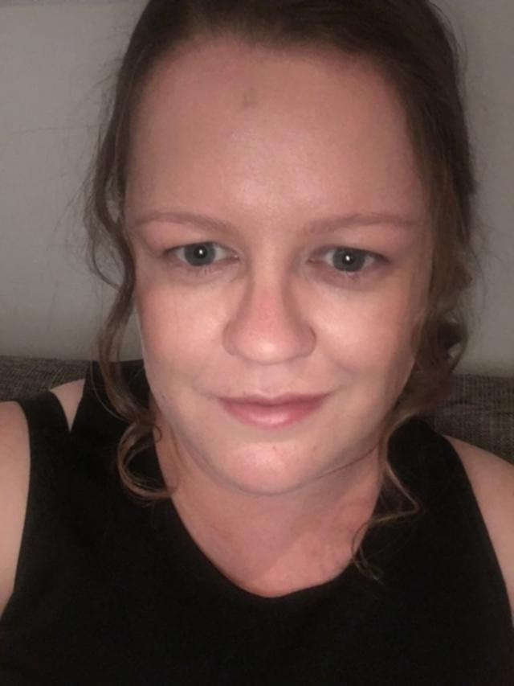
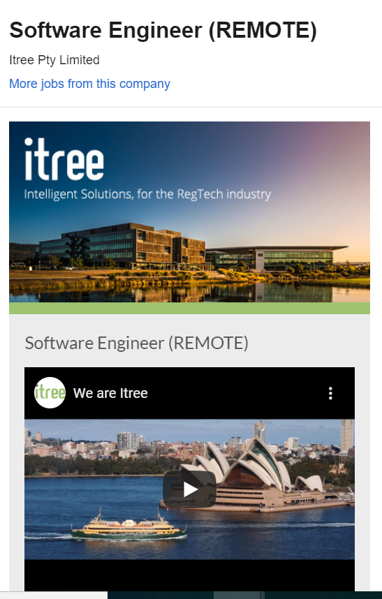
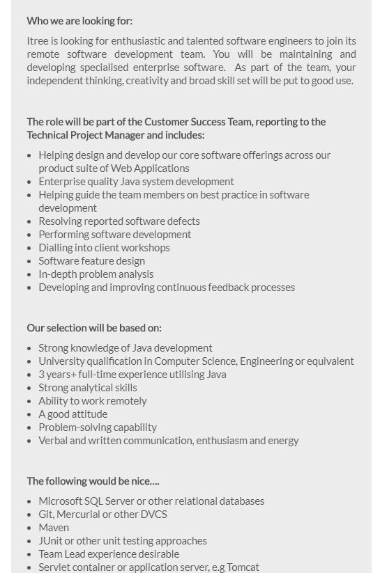

(registerd at Uni as Lynette Kemp for now)
S3728067@student.rmit.edu.au
S3728067
I grew up on a remote farm on the West coast of SA, on the edge of the nullabor, my family had lived in the area for many generations, as a teenager I moved to Port Augusta.
After school I initially moved to Adelaide to attend Uni but dropped out to return home, I did some Tafe courses and completed a Certificate 2 in business administration
2 years after high school I was approved for a UK working Visa and spent 2 years based out of London, I travelled throughout Europe, Mexico, Syria, Jordan and Egypt, this was 2001-2003, so before Syria was destroyed.
Returning home I went on complete a Certificate 4 in Accounting. Whilst working as a paraplanner I undertook study to gain a Diploma in Financial Planning. I returned to Uni to do a Bachelor of Accounting, attending some classes at UniSA Whyalla campus. Due to personal reasons and the Whyalla campus no longer doing accounting I took some time off from Uni and returned last year via Open Universities.
When I needed a break from financial planning I set up and operated my own retail business for 5 years, during 2 of those years I had a second shop 75 km away. Due to the local economy and my divorce I closed the store down and having since being working in an administration position, this position offers me flexibility which I need with 2 children but is not something I would want to be doing long term.
My parents were into gaming so I grew up with an Atari system and remember the excitement of the new commodore 64. At my small primary school I got to set up the new apple computers as I finished my work early. I found most of the computing classes at school easy and ended up helping others often.
When I attended Uni originally out of high school I enrolled in a Bachelor of Science with the plan to major in math, my first 4 subjects were math, C+, communications & Visual Basics, I soon found that having previously done math 2 by correspondence that listening to a lecture sounded like I was listening to a different language so dropped out and found myself enjoying the programming courses but ended up returning home before the 1st semester was over for personal reasons.
When I returned to do an accounting course I did look at other options but was convinced I should stick to accounting as there would be more career opportunities locally, it took me 3 years after my divorce to sit down and really think what I wanted for my future and decide on a new direction, which is how I ended up enrolling in this course. I always end up being the person that helps with IT at each place I work and I want to be able to do more than my current skillset allows.
Software Engineer Remote
 
I would like to work in software development, but living in a small town with no options to move for about 10 years, this would be more an option if I can obtain a remote position. This position requires an excellent knowledge of Java and how it works in relation to their web applications, as well as being good as analysing problems and designing need software features. There is work involved in client relations and management of staff. This position requires 3+ years of Java experience.
I am currently doing courses in salesforce as I have being told about some remote software testing contract work upcoming that I can do after the required training. I am trying to get experience so that it will lead to further opportunities, it would be nice to be able to cut my hours at my current position and work more in the field I want to end up in long term. I will be listening out for opportunities locally to work in the IT industry but I previously worked for myself for 5 years so would be looking for opportunities to do this again.
The results of an online Myers-Briggs test (16Personalities)
Personality type: “The Advocate” (INFJ-T)
Individual traits: Introverted – 71%, Intuitive – 67%, Feeling – 64%, Judging – 57%, Turbulent – 69%
Role: Diplomat
Strategy: Constant Improvement
The results of online learning style test (educationplanner.org)
Your Scores:
Auditory: 25%
Visual: 25%
Tactile: 50%
You are a Tactile learner!
The results of The big 5 Personality Test
Your Openness Score in Depth
Openness describes an individual’s tendency to think in complex, abstract ways. People who are high in Openness are abstract thinkers, while people who are low in Openness are concrete thinkers.
YOUR SCORE 69%
AVERAGE 58%
As a person high in Openness, you are more able than the average person to connect seemingly unrelated concepts. This makes you more creative and imaginative than average, and more likely to appreciate unusual ideas. Because you are high in Openness, you are more likely to appreciate art, music, and various cultural activities. You may notice that you are more interested in such things than the average person. Your mind is better able to process loosely connected ideas, and so you are more apt to appreciate, say, a sculpture of an elephant built out of forks. While many people would find such a thing bizarre, you enjoy considering the meaning of things and working to understand how seemingly unrelated ideas might be connected.
What do the results of these tests mean for you?
I found the learning style interesting, I have always found that having that I study better with frequent breaks and frequently switch between 2 activities to avoid my mind wandering, when I am limited for time I really have to ensure my time is managed and focused to complete all task on time.
With the personality test I found it to be so accurate in sections, I always thought of myself as the jack of all trades sort of person, I have taken on many varied roles but this paragraph really summed it up ‘Many struggle to begin a career early on because they see ten wildly different paths forward, each with its own set of rewards. This can be appealing but also heartbreaking, because picking just one means letting go of so much else. (16Personalities)’
How do you think these results may influence your behaviour in a team?
I can take on other people ideas and expand on them in different ways.
How should you take this into account when forming a team?
I know from previous experience and these results back it up that I can sometimes take on too much, and try and help out too much, but having done many group assignments I have learned to ensure a bit more balance.
I am designing a calendar/to-do list that will be originally for co-parenting but add functionality to be usable to anyone that needs to keep track of more then just their own calendar.
There are a number of apps available for co-parenting but some require each party to pay a monthly fee which rather a once off amount which in a high conflict situation is hard to get both parties to agree to. Many of the available apps act as if parenting is the only role a person has and require a second calendar to be used for non-child related items.
Single-parent families have also increased – from 6.5% of families in 1976, to 10.2% in 2016. (Australian Institute of Family Studies, 2019) The changing family structure means more children living in separated house-holds.
A calendar when options to view in daily, weekly or monthly format.
Each person that will have events allocated to them will be set up as a user. Then Every event that is entered must be assigned to a user. When each person is set up the setting are put in place of who gets notification of this person events such as parent/step-parent/grandparent. Notifications have to be acknowledged when new event are added or removed. When you set up yourself as a user you can choose that no one other then you can see events set up for yourself.
Parenting plan times are entered in the calendar which shows who the children are with at any given time. The childrens events appear differently depending if it your time with them or not. So they are greyed out/in the background when it is not your time with them but this can be changed if you selected to attend that event. This allows you to aware of events outside of your time if you need to attend but puts the events in the background if you have other events happening.
Schooling and regular hobbies/sports are set with a section where documents can be uploaded, for other people involved to be able to read. These uploads could also be read by the program and suggested events could be made and approved for the calendar, such as the upcoming schedule for a sporting team.
There would functionality to keep track of childrens gear, with an inventory list of what is being sent to the other parents house, which can tick off to check received. This will keep track of where the children belongings are and save questions such as ‘Who has book for yearly swim lessons?’
Receipts for expenses can be uploaded with options of adding in who paid and therefore who owes who money.
A contact directory for childrens doctor’s/teachers etc and details of friends, along with a place to upload reports, party invites etc.
For personal and work to-do list are helpful but to get the most out of them there needs to be an option to time block in the calendar and to ensure that a to-do id not missed they need to be ticked off or rolled over to ensure completion.
The program will need to be available on different devices so IOS, Android and Web based versions will need to be available.
The development of this program will require a good understanding of software development across different platforms. The skills to make this program can be learnt as our programming skills are advanced at uni.
This program will allow parents to organise their time and keep track of activities all in the one place without having to use different apps. This will mean a more organised life for children and parents, with information available to all parents in the one place.
16Personalities. (2019). Introduction | Advocate Personality (INFJ-A / INFJ-T) | 16Personalities. [online] Available at: https://www.16personalities.com/infj-personality [Accessed 3 Dec. 2019].
Australian Institute of Family Studies. (2019). Population and households. [online] Available at: https://aifs.gov.au/facts-and-figures/population-and-households [Accessed 14 Dec. 2019].
Educationplanner.org. (2019). What's Your Learning Style? 20 Questions. [online] Available at: http://www.educationplanner.org/students/self-assessments/learning-styles-quiz.shtml?event=results&A=5&V=5&T=10 [Accessed 14 Dec. 2019].
Truity. (2019). The Big Five Personality Test. [online] Available at: https://www.truity.com/personality-test/13683/test-results/12202104 [Accessed 14 Dec. 2019].